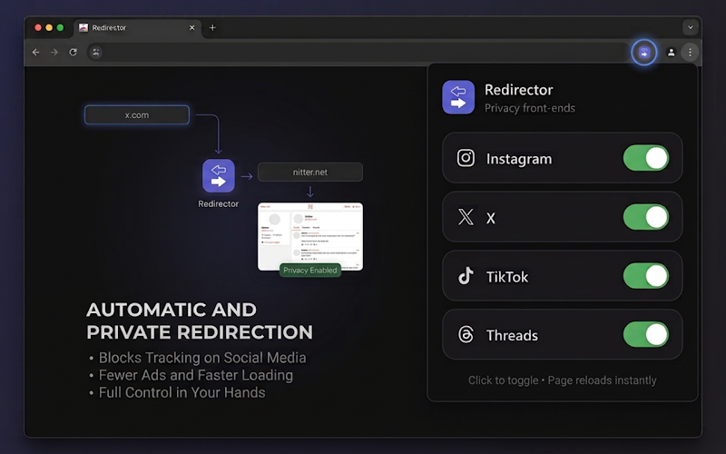

A browser extension that redirects social media pages to privacy-respecting front-ends.
| Platform | Original | Redirect |
|---|---|---|
| instagram.com | imginn.com | |
| X | x.com | nitter.net (customizable via ⚙ in popup) |
| TikTok | tiktok.com | exporttok.com |
| Threads | threads.com | shoelace.mint.lgbt |
Chrome:
chrome://extensions/social-media-redirector folderFirefox:
about:addons.xpi fileWorks on any browser (Chromium or Gecko based). Create a new bookmark with the generated URL below. Then visit a supported page (Instagram, X, TikTok, or Threads) and click the bookmark — you'll be automatically redirected to the privacy front-end.
Chrome:
zip -r social-media-redirector-chrome.zip Extension/manifest.json Extension/background.js Extension/popup.html Extension/popup.js Extension/images/
Firefox:
cp Extension/manifest-firefox.json Extension/manifest.json && zip -r social-media-redirector-firefox.zip Extension/manifest.json Extension/background.js Extension/popup.html Extension/popup.js Extension/images/
Releases are automatically built by GitHub Actions.
MIT